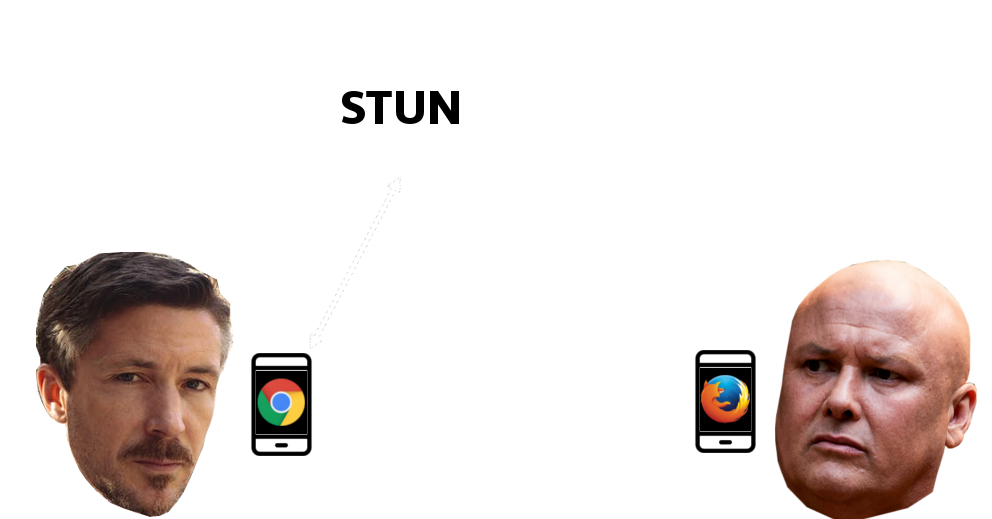

/usr/bin/whoami ?
Luis Montes
 @MONTESLU
@MONTESLU 
Johnny-Five

over 100 contributors
Web Application Platform
- HTML, CSS
- Voice, Video
- WebSockets
- Voice Rec / TTS
- Acceleromters
- Gamepad input
- Web VR, Web AR!
Web USB ?

Web Bluetooth
- Since Chrome 56 stable!
- Use Noble
Near Field Communications (Web NFC)
http(s)
- Not Fault tolerant
- Susceptible to Censorship
- Serverless ?
2001: Bit Torrent
Distributed Hash Tables(DHTs)
- Decentralization
- Scalability
- Fault Tolerance
- 2005 - trackerless
ipfs
InterPlanetary File System
- Directed Acyclic Graph (DAG)
- Pub/Sub !
ipfs URLs
https://host/ipfs/QmYw...Pbdh/cat.jpg
dat://
- DNS
- Multicast DNS
- Kademlia DHT
npm install -g dat
cd someDir
dat share
Web RTC

Web RTC

Web RTC

Web RTC

Web RTC
PeerConnection DataChannel !
PeerConnection DataChannel !